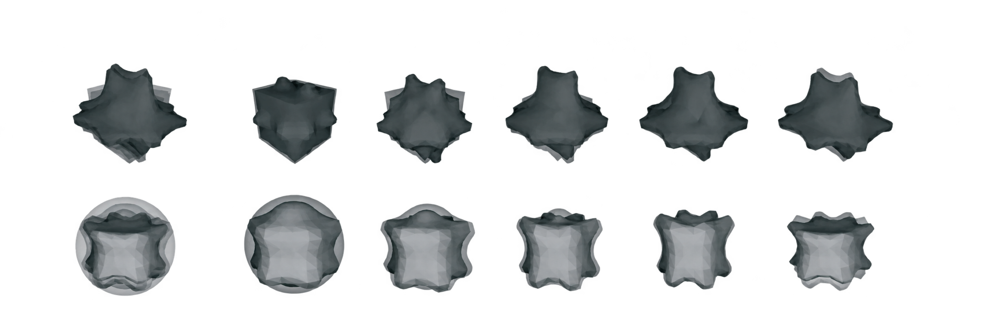
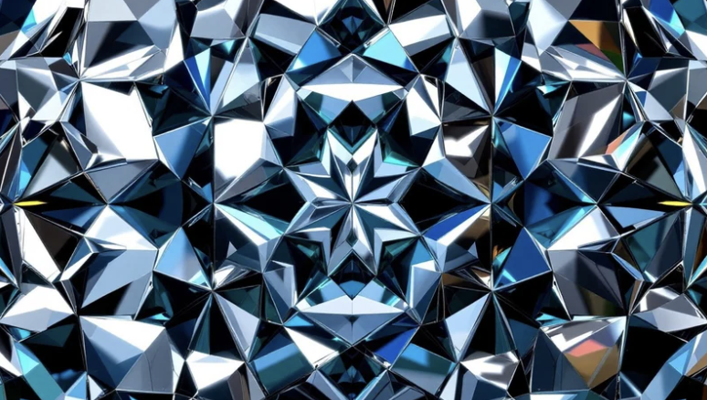
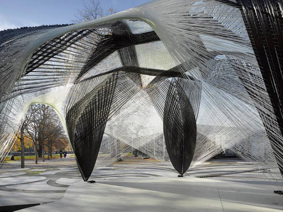
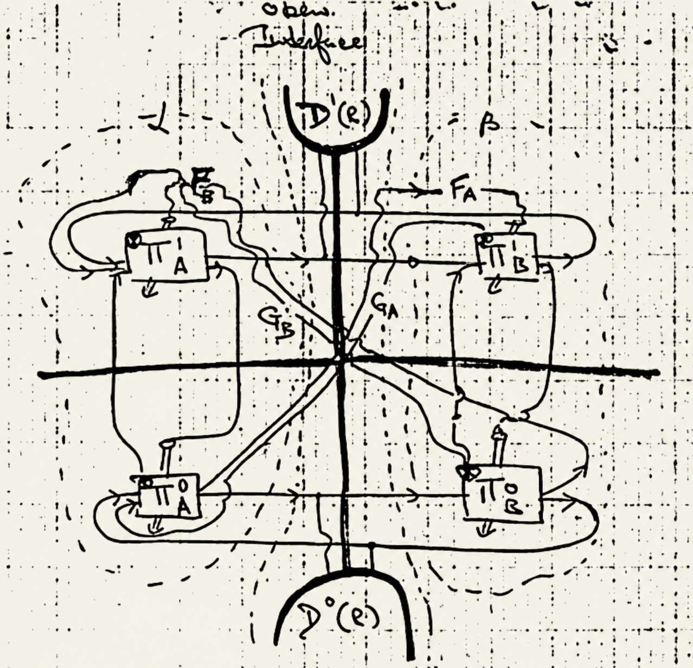
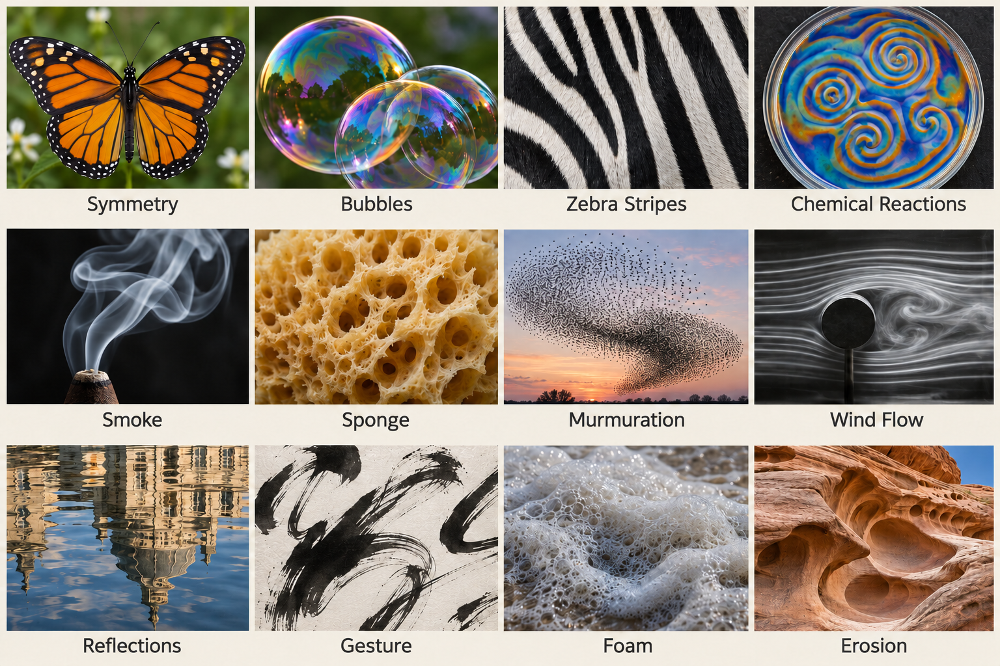
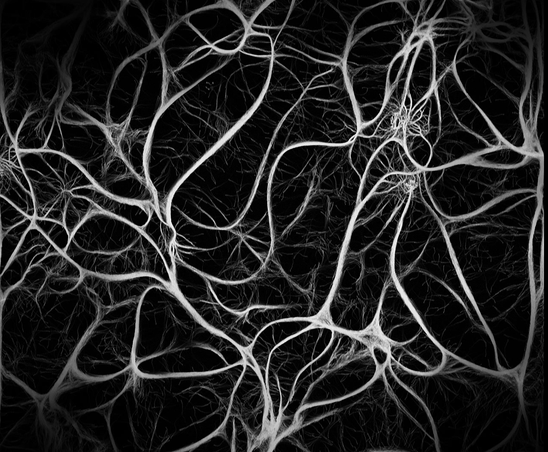

Traditional architectural design
Architect directly creates a form
A design theory instrument
From our hands, beyond our control.
If the designer writes the rules, who authors the form?

Architect directly creates a form
Architect defines rules that generate forms
Parameters and relationships control geometric variation
Algorithms generate, evaluate, select and evolve options
Machine learning and computational tools assist generation, evaluation and refinement

Sign here
Every form begins with your signature. Its curves and turns guide a flock of digital agents, whose movement follows three behaviours: cohesion, separation, and alignment.
Three studies begin with the same signature, each giving a different behaviour more influence. In The Experiment, you can bring their forms together and shape your own composition.
Make your mark to see what unfolds.
The rules are written. They have not met a signature yet.

Same beginning. Only the leading rule changes. The lines grow as the flock moves.
Your signature’s turns become the places where the rules shape the object.
Texture, volume, and motion. One choice in each, shared by every view
None. The studies run on their own rules.
Colour, shared by every view

01
attraction
Cohesion 1.00 · Separation 0.05 · Alignment 0.08 · Neighbourhood 0.30
Drawing limit reached. These agents keep moving without adding tubes.
Agents gather around the turns. The clusters were not drawn in advance.
02
repulsion
Cohesion 0.08 · Separation 1.00 · Alignment 0.06 · Neighbourhood 0.19
Drawing limit reached. These agents keep moving without adding tubes.
Agents open space around the turns. The same mark becomes a porous volume.
03
mimicry
Cohesion 0.10 · Separation 0.24 · Alignment 1.00 · Neighbourhood 0.19
Drawing limit reached. These agents keep moving without adding tubes.
Agents draw coordinated connections between the turns. The mark becomes streams.
04
all three forms
Drawing limit reached. These agents keep moving without adding tubes.
Bring the three studies together to create your own composition. Use the sliders to adjust the size of each form, and turn on Symmetry to join it with its mirror image. Your changes here leave the studies above unchanged.
Pause to explore the form, Restart to watch it grow again, or Fit View to bring the whole object back into view.

Proportion, symmetry, geometry, and repetition organize space and form.
Milestones
Geometry · Proportion · Symmetry
Natural geometry and structural experiment inform the form.
Milestones
Nature · Structural logic · Organic forms
Computers open calculation to complex design problems.
Milestones
Computation · Algorithms · Information
Drawing systems move onto the computer.
Milestones
Digital drawing · Computer graphics · Geometric modeling
Simulation and mathematics are used to find efficient structure.
Milestones
Optimization · Simulation · Form-finding
Digital models let a form change when its parameters change.
Milestones
Parametric design · Digital modeling · Complexity
Algorithms generate alternatives rather than only recording a chosen form.
Milestones
Generative systems · Algorithms · Digital fabrication
Generation is tied to environment, structure, material, and making.
Milestones
Performance · Iteration · Optimization · Fabrication
Machine learning helps generate and evaluate architectural possibilities.
Milestones
Artificial intelligence · Machine learning · Data-driven design · Human–AI collaboration
